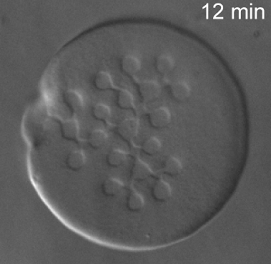

Publications
All publications by year
2017
"Active matter at the interface between materials science and cell biology" Daniel Needleman and Zvonimir Dogic, Nature Reviews Materials 2, Article number: 17048 (2017), doi:10.1038/natrevmats.2017.48 [Web]
"Achiral symmetry breaking and positiive Gaussian modulus lead to scalloped colloidal membranes" Thomas Gibuad, C. Nadir Kaplan, Prerna Sharma, Mark. J. Zakhary, Rudolf Oldenbourg, Robert. B. Meyer, Randall D Kamien, Thomas R. Powers and Zvonimir Dogic, Proc. Nat. Acad. Sci., 333, E3376 (2017). [Web][PDF]
"Transition from turbulent to coherent flows in confined three-dimensional active fluids" Kun-Ta Wu, Jean Bernard Hishamunda, Daniel T. N. Chen, Stephen J. DeCamp, Ya-Wen Chang, Alberto Fernandez-Nieves, Seth Fraden, Zvonimir Dogic (2017) Science. [Web]
2016
2015
2014
"Tunable dynamics of microtubule-based active isotropic gels" Gil Henkin, Stephen J. DeCamp, Daniel T. N. Chen, Tim Sanchez and Zvonimir Dogic, to appear in Philosophical Transactions of the Royal Society A, A372, 20140142.[PDF]

"Imprintable membranes from incomplete chiral coalescence" Mark J. Zakhary, Thomas Gibaud, C. Nadir Kaplan, Edward Barry, Rudolf Oldenbourg, Robert B. Meyer and Zvonimir Dogic, Nature Communications 5, 3063 (2014). [PDF]
"Hypercomplex Liquid Crystals" Zvonimir Dogic, Prerna Sharma and Mark J. Zakhary, Annual Review of Condensed Matter Physics 5, 137-57 (2014). [PDF]
2013
"Engineering Oscillating Microtubule Bundles" Tim Sanchez and Zvonimir Dogic, Methods in Enzymology 524, 205-226 (2013). [PDF]
"Geometrical edgeactants control interfacial bending rigidity of colloidal membranes" Mark J. Zakhary, Prerna Sharma, AndrewWard, Sevim Yardimici and Zvonimir Dogic, Soft Matter 9, 8306-8313 (2013). [PDF]
2012
"Self-assembly of 2D membranes from mixtures of hard rods and depleting polymers" Y. Yang, E. Barry. Z. Dogic and M. F. Hagan, Soft Matter 8, 707-714 (2012). [PDF]
2011
2010 and earlier
2010
"Entropy Driven Self-Assembly of Non-Amphiphilic Colloidal Membranes" E. Barry and Z. Dogic, PNAS 107, 10348-10353 (2010). [PDF][Supp.] 2010 Cozzereli Prize from National Academy of Sciences
"Adenomatus polyposis coli protein nucleates actin assembly and synergizes with formin mDia1" K. Okada, F. Bartolini, A. M. Deaconescu, J. B. Moseley, Z. Dogic, N. Grigorieff, G. G. Gundersen and B. L. Goode J. Biol. Chem. 189, 1087-1096 (2010). [PDF][Supp.]
"Circularization, photo-mechanical switching and a supercoiling transition of actin filaments" T. Sanchez, I. Kulic and Z. Dogic, Phys. Rev. Lett. 104, 098103 (2010). [PDF]
2009
"An active biopolymer network controlled by molecular motors" G. H. Koenderink GH, Z. Dogic Z, F. Nakamura F, P. M. Bendix, F. C. MacKintosh, J. H. Hartwig, T. P. Stossel and D. A. Weitz, PNAS 106, 15192-15197 (2009). [PDF][Supp.]
"Condensation of isolated semi-flexible filaments driven by depletion interactions" A. W. C. Lau, A. Prasad and Z. Dogic EPL 87, 48006 (2009). [PDF]
"A model liquid crystalline system based on rodlike viruses with variable chirality and persistence length" E. Barry E, D. Beller and Z. Dogic Soft Matter 5, 2563-2570 (2009). [PDF]
"Pair Potential of Charged Colloidal Stars" F. Huang, K. Addas, A. Ward A, T. N. Flynn, E. Velasco, M. F. Hagan, Z. Dogic and S. Fraden Phys. Rev. Lett. 102, 108302 (2009). [PDF]
"Direct Measurement of the Twist Penetration Length in a Single Smectic A Layer of Colloidal Virus Particles" E. Barry, Z. Dogic , R. B. Meyer, R. A. Pelcovits and R. Oldenbourg J. of Phys. Chem. B 113, 3910-3913 (2009). [PDF]
2008
"A quantitative analysis of contractility in active cytoskeletal protein networks" P. M. Bendix, G. J. Koenderink, D. Cuvelier, Z. Dogic, B. M. Koeleman, W. M. Brieher, C. M. Field, L. Mahadevan and D. A. Weitz, Biophys. J. 94, 3126-3136 (2008). [PDF][Supp.]
2007
"Bending dynamics of fluctuating biopolymers probed by automated high-resolution filament tracking" C. P. Brangwynne CP, G. H. Koenderink, E. Barry, Z. Dogic, F. C. MacKintosh and D. A. Weitz Biophys. J. 93, 346-359 (2007). [PDF]
2006
"Vorticity banding in rodlike virus suspensions" K. G. Kang, M. P. Lettinga, Z. Dogic, J. K. G. Dhont Phys. Rev. E 74, 026307 (2006). [PDF]
"Counterion-mediated attraction and kinks on loops of semiflexible polyelectrolyte bundles" A. Cebers, Z. Dogic Z, P. A. Janmey Phys. Rev. Lett. 96, 247801 (2006). [PDF]
"Ordered phases of filamentous viruses" Z. Dogic and S. Fraden, Curr. Opinion in Coll. and Inter. Sci. 11, 47-55 (2006). [PDF]
"Entropy-driven formation of a chiral liquid-crystalline phase of helical filaments" E. Barry E, Z. Hensel Z, Z. Dogic, M. Schribak and R. Oldenbourg, Phys. Rev. Lett. 96, 018305 (2006). [PDF]
2005
"Flow behavior of colloidal rodlike viruses in the nematic phase" E.M. P. Lettinga, Z. Dogic, H. Wang and J. Vermant Langmuir 21, 8048-8057 (2005). [PDF]
"Self-diffusion of rod-like viruses in the nematic phase" M. P. Lettinga, E. Barry and Z. Dogic EPL 71, 692-698 (2005). [PDF]
"Phase behavior of rod-like viruses and virus-sphere mixtures" Z. Dogic and S. Fraden, Soft Matter: Complex Colloidal Suspensions, v. 2, Gompper G., Schick, M. eds., Wiley-VCH Weinheim, 2005. [PDF]
2004
"Melting of lamellar phases in temperature sensitive colloid-polymer suspensions" A. M. Alsayed, Z. Dogic and A. G. Yodh Phys. Rev. Lett. 93, 057801 (2004). [PDF]
"Isotropic-nematic phase transition in suspensions of filamentous virus and the neutral polymer" Dextran Z. Dogic, K. R. Purdy, E. Grelet and S. Fraden, Phys. Rev. E 69, 051702 (2004) [PDF]
"Elongation and fluctuations of semiflexible polymers in a nematic solvent" Z. Dogic , J. Zhang J, A. W. C. Lau, H. Aranda-Espinoza, P. Dalhaimer, D. E. Discher, P. A. Janmey, R. D. Kamien, T. C. Lubensky and A. G. Yod, Phys. Rev. Lett. 93, 219902 (2004). [PDF][Erratum]
"Nematic nanotube gels" M. F. Islam, A. M. Alsayed, Z. Dogic, J. Zhang, T. C. Lubensky and A. G. Yodh Phys. Rev. Lett. 92, 088303 (2004). [PDF]
2003
"Surface freezing and a two-step pathway of the isotropic-smectic phase transition in colloidal rods" Z. Dogic Phys. Rev. Lett. 91, 165701 (2003). [PDF]
"Measuring the nematic order of suspensions of colloidal fd virus by x-ray diffraction and optical birefringence" K. R. Purdy, Z. Dogic, S. Fraden, A. Ruhm, L. Lurio and S. G. J. Mochrie Phys. Rev. E 67, 031708 (2003). [PDF]
"Shear-banding and microstructure of colloids in shear flow" J. K. G Dhont, M. P. Lettinga, Z. Dogic, T. A. J. Lenstra, H. Wang, S. Rathgeber, P. Carletto, L. Willner, H. Frielinghaus and P. Lindner Farady Disscussions 123, 157-172 (2003). [PDF]
2001
"Concentration-dependent sedimentation of colloidal rods" Z. Dogic. A. P. Philipse, S. Fraden and J. K. G. Dhont J. Chem. Phys. 113, 8368-8380 (2000). [PDF]
"Concentration-dependent sedimentation of colloidal rods" Z. Dogic and S. Fraden, Langmuir 16, 7820-7824 (2000). [PDF]
"Enhanced stability of layered phases in parallel hard spherocylinders due to addition of hard spheres" Z. Dogic, D. Frenkel and S. Fraden, Phys. Rev. E 62, 3925-3933 (2000). [PDF]
1998
"Entropically driven microphase transitions in mixtures of colloidal rods and spheres" M. Adams, Z. Dogic, S. L. Keller and S. Fraden Nature 393, 349-352 (1998). [PDF]
1997
"Smectic phase in a colloidal suspension of semiflexible virus particles" Z. Dogic and S. Fraden Phys. Rev. Lett. 78, 2417-2420 (1997). [PDF]